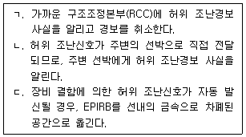
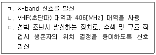
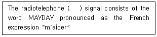
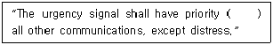
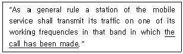
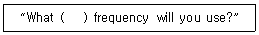
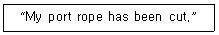
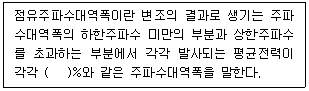
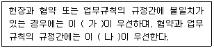

전파전자통신기능사 (2021-10-15 기출문제)
1과목: 임의 구분
1. 디지털 신호(0, 1)의 정보 내용에 따라 반송파의 위상을 변화시키는 디지털 변조방식은?
- ASK
- FSK
- PSK
- PCM
(정답률: 48%)

2. 무선송신기의 구성요소 중 반송파를 발생하는 곳은?
- 발진부
- 증폭부
- 저주파 증폭기
- 종단전력 증폭기
(정답률: 53%)
3. 다음 중 AM 수신기에서 전체 이득의 반 이상과 선택도를 결정하는 부분은?
- 고주파증폭부
- 주파수 변환부
- 중간주파 증폭부
- 복조회로
(정답률: 39%)
4. A선박이 Radar 항법을 이용하여 12knot 속력으로 항해 중 정선수 24마일 떨어진 목표물(Buoy)의 3마일 전방에서 변침하고자 한다. 현재 시간은 12시 정각, 현재의 기상상태는 아주 고요하고 조류의 영향도 없는 상태이다. 이때 변침 예정시간은?
- 13시 30분
- 13시 45분
- 14시 00분
- 14시 15분
(정답률: 86%)
5. 선박자동식별장치(AIS : Automatic Identification System)에서 선택사양으로 추가할 수 있는 기능이 아닌 것은?
- 진방위를 나타내는 자이로 컴파스
- 위성을 이용한 위성 위치 측정 시스템
- 본선의 대수 속력을 이용한 스피드 로그
- 측심을 이용할 수 있는 에코 사운드
(정답률: 74%)
6. 선박보안경보장치(SSAS : Ship Security Alert System) 대한 설명으로 옳지 않은 것은?
- 미국 9.11 테러 이후 선박 및 항만 시설에 대한 보안의 필요성에 따라 만들어진 시스템이다.
- 보통 경보버튼은 항해 선교와 최소 다른 1개 이상의 장소에 설치되어 운영되고 있다.
- 선박의 보안을 목적으로 운영되고 있다.
- 오경보 시에 본선의 보안책임자를 통해 최종 보고 대상은 회사의 보안 책임자(CSO)가 된다.
(정답률: 91%)
7. 주파수가 3[MHz]인 전파의 파장은?
- 1[m]
- 10[m]
- 100[m]
- 1,000[m]
(정답률: 56%)
8. 다음 중 수직편파를 사용하며, 수평면내 무지향성 특성을 가진 안테나는?
- Brown 안테나
- Turnstile 안테나
- Super turnstile 안테나
- Super gain 안테나
(정답률: 45%)
9. 다음 중 주파수 30[MHz]~300[MHz] 사이에서 주로 사용되는 안테나가 아닌 것은?
- 롬빅 안테나
- 야기 안테나
- 휩 안테나
- 헬리컬 안테나
(정답률: 59%)
10. 단파대 송·수신용 안테나에 사용하는 동축 급전선의 특성임피던스로 가장 적합한 것은?
- 50[Ω]
- 75[Ω]
- 300[Ω]
- 600[Ω]
(정답률: 58%)
11. 특성 임피던스가 100[Ω]인 급전선에 부하 임피던스 200[Ω]에 연결되었을 때 전압 반사계수는 약 얼마인가?
- 0.33
- 0.5
- 3.3
- 5
(정답률: 52%)
12. 다음 중 마이크로파 통신의 특징으로 적합하지 않은 것은?
- 주파수 대역폭이 넓어서 광대역 또는 다중통신이 가능하다.
- 기상상태에 따라 전송품질이 변한다.
- 외부 잡음의 영향이 적으며, 전파손실이 적다.
- 파장이 짧아서 전리층을 이용한 원거리 통신에 유리하다.
(정답률: 69%)
13. 90[MHz]의 VHF대 반송파를 최대 주파수 편이 △F = 72[kHz], 신호 주파수 fs = 3[kHz]로 하여 주파수 변조(FM)한 경우에 점유 주파수 대역폭 BW는 얼마인가?
- 24[kHz]
- 75[kHz]
- 150[kHz]
- 90.075[kHz]
(정답률: 50%)
14. 선박에서 퇴선시 가능하다면 구명정으로 가지고 가야 할 GMDSS 무선설비는?
- Navtex, 2-way VHF, SART
- Navtex, 2-way VHF, EPIRB
- EGC, SART, EPIRB
- 2-way VHF, EPIRB, SART
(정답률: 62%)
15. 인마셋 EGC서비스에서 사용되는 우선순위코드(C1)에 분류되지 않는 것은?
- 1은 안전(Saferty)을 의미한다.
- 2은 긴급(Urgent)을 의미한다.
- 3은 조난(Distress)을 의미한다.
- 4은 위험(Dangerous)을 의미한다.
(정답률: 74%)
16. 다음 중 한 개의 정지궤도위성에서 이론적으로 지구의 표면적을 커버할 수 있는 범위[%]로 가장 적절한 것은?
- 약 10[%]
- 약 30[%]
- 약 40[%]
- 약 60[%]
(정답률: 58%)
17. Inmarsat-C의 특징으로 옳지 않은 것은?
- 축적전송(S & F : Store and Forward) 방식이다.
- 전화, E-mail, Fax, 모두가 가능한 기능을 갖추고 있다.
- 조난통신을 최고 우선순위로 RCC에게 통보한다.
- Enhanced Group Call 기능을 갖고 있다.
(정답률: 74%)
18. 수신기의 감도 측정에서 무유도 부하 저항이 10[kΩ]일 때 규격 출력 10[mW]이다. 이보다 20[dB] 낮은 출력 전압을 얻고자 한다면 몇 [V]로 조정하면 좋은가?
- 10[V]
- 0.1[V]
- 1[V]
- 0.01[V]
(정답률: 58%)
19. 1[W]는 몇 [dBm]인가?
- 0[dBm]
- 10[dBm]
- 20[dBm]
- 30[dBm]
(정답률: 74%)
20. 다음 중 수신기의 감도에 대한 설명으로 맞는 것은?
- 얼마나 약한 전파 까지를 수신할 수 있느냐의 극한을 표시하는 양으로서 주로 종합 이득과 내부 잡음에 의해서 결정
- 출력 중에 안테나에 유기한 변조 파형을 어느 정도까지 정확하게 재현할 수 있느냐 하는 정도
- 조정한 수많은 주파수 중 어느 하나를 어느 정도까지 선택하여 수신할 수 있느냐 하는 정도
- 입력회로의 전력과 출력회로의 전력과의 비를 데시벨로 나타낸 것
(정답률: 69%)
2과목: 임의 구분
21. 다음 중 100[kHz]의 고조파에 해당하는 것은?
- 110[kHz]
- 150[kHz]
- 200[kHz]
- 250[kHz]
(정답률: 60%)
22. EPIRB(비상위치지시용 무선표지설비)를 사용해 허위 조난경보를 발신한 경우 취해야 할 조치로 적절한 것을 모두 고르시오.

- ㄱ, ㄴ
- ㄴ, ㄷ
- ㄱ, ㄷ
- ㄱ, ㄴ, ㄷ
(정답률: 50%)
23. 다음 중 COSPAS-SARSAT 비상위치지시용 무선표지설비(EPIRB)에 대한 설명으로 옳은 것을 모두 고른 것은?

- ㄱ, ㄴ
- ㄴ, ㄷ
- ㄱ, ㄷ
- ㄱ, ㄴ, ㄷ
(정답률: 46%)
24. GMDSS에서 사용하는 약어 “EPIRB”의 원어는?
- Emphasis Peak Indication Radio Beacon
- Enhanced Period Inside Radio Band
- Emulating Power In Radio Band
- Emergency Position Indicating Radio Beacon
(정답률: 79%)
25. 다음 무선국 용어에 대한 우리말 번역으로 잘못 연결된 것은?
- Aircraft station : 고정국
- Coast station : 해안국
- Survival craft station : 구명이동국
- Broadcasting station : 방송국
(정답률: 80%)
26. 다음 중 괄호 안에 들어갈 가장 적합한 단어는?

- urgency
- rescue
- distress
- safety
(정답률: 67%)
27. 다음 문장의 괄호 안에 들어갈 가장 적당한 단어는?

- below
- out
- over
- under
(정답률: 73%)
28. “국제 NAVTEX 업무”란 영어를 사용하여 ( )로 행하는 협대역직접인쇄전신(NBDP)에 의한 해사안전정보(MSI)의 조정된 방송 및 그 자동수신을 말한다. 괄호 안에 들어갈 주파수는?
- 518[kHz]
- 120[kHz]
- 312[kHz]
- 620[kHz]
(정답률: 89%)
29. 다음 문장의 밑줄 친 부분을 가장 옳게 국역한 것은?

- 그 호출을 하려면
- 그 호출이 행하여지고 있는
- 그 호출을 하려고 할 경우
- 그 호출을 무시한
(정답률: 78%)
30. 다음은 귀국이 어떤 통신주파수를 사용할 것인지를 물어보고자 할때의 표현이다. 괄호 안에 들어갈 단어로 가장 적당한 것은?

- working
- watching
- acting
- kind of
(정답률: 60%)
31. 다음 문장에 대한 번역으로 옳은 것은?

- 본선의 우현 로프는 절단되었다.
- 본선의 좌현 로프는 절단되었다.
- 본선의 선수 로프는 절단되었다.
- 본선의 선미 로프는 절단되었다.
(정답률: 72%)
32. 다음 중 구명정을 의미하는 단어는?
- life jacket
- life boat
- life signal
- life raft
(정답률: 85%)
33. 다음 중 무선통신에 관련된 약어의 뜻하는 옳은 것은?
- PCS : 직접배달통신
- CDMA : 진폭변조방식
- TRS : 주파수공용통신
- ISDN : 초직접회로
(정답률: 71%)
34. “HLDE”라는 호출부호를 음성통화표로 풀어 쓴 것 중 잘못된 것은?
- H (Hotel)
- L (Lima)
- D (December)
- E (Echo)
(정답률: 85%)
35. “단어 하나 하나를 2회씩 보내라”의 무선전화의 절차용어는?
- WORDS TWICE
- I READ BACK
- I REPEAT
- SAY AGAIN
(정답률: 89%)
36. 다음 중 통화표에 의한 숫자와 사용 약어로 잘못된 것은?
- 5 : PANTAFIVE
- 6 : SOXISIX
- 7 : LUCKYSEVEN
- 8 : OKTOEIGHT
(정답률: 79%)
37. 다음 중 용어의 뜻이 서로 맞지 않는 것은?
- urgency signal : 긴급신호
- ordinary telegram : 개인정보
- distress traffic : 조난통신
- public correspondence : 공중통신
(정답률: 69%)
38. 다음 무선전화 절차용어의 설명 중 틀린 것은?
- Roger : 당신의 송신을 수신했고 이해했다.
- Stand by : 잠시 기다리시오.
- Wait out : 끝내시오.
- Go ahead : 보내 주시오.
(정답률: 82%)
39. “나의 송신은 끝나고 너의 응답을 기다린다.”를 나타내는 무선전화 용어는 무엇인가?
- OUT
- WAIT
- OVER
- ROGER
(정답률: 80%)
40. 다음 중 해안지구국이 소재하지 않는 곳은?
- Kumsan
- Eik
- Yamaguchi
- Tokyo
(정답률: 65%)
3과목: 임의 구분
41. “Willy Willy”는 어느 해역에서 발생하는 열대성 저기압인가?
- Oceania
- India Ocean
- Pacific Ocean
- Atlantic Ocean
(정답률: 68%)
42. 다음 중 청문을 하여야 할 수 있는 처분이 아닌 것은?
- 주파수할당의 취소
- 적합성평가의 취소
- 주파수회수 또는 주파수 재배치
- 위성주파수이용권의 양도 또는 임대 등에 대한 승인
(정답률: 53%)
43. 다음 중 주파수 사용승인의 신청에 대한 적합성 심사 후에 발급하는 사용승인서에 포함되는 사항이 아닌 것은?
- 전파형식
- 변조방식
- 안테나공급전력
- 점유주파수대역폭
(정답률: 53%)
44. 다음 중 전파법에서 주파수할당의 결격사우에 해당하지 않는 자는?
- 외국의 법인 또는 단체
- 외국정부 또는 그 대표자
- 대한민국의 국적을 가지지 아니한 자
- 폭력행위 등 처벌에 관한 법률을 위반한 자
(정답률: 70%)
45. 다음 중 전파법에서 사용하는 용어의 정의가 잘못된 것은?
- 우주국 : 인공위성에서 개설한 무선국
- 위성궤도 : 우주국의 위치나 궤적(Trajectory)
- 지구국 : 선박국과 통신을 하기 위하여 지구에 개설한 무선국
- 위성망 : 우주국과 지국국으로 구성된 통신망(위성주파수와 위성궤도를 포함)의 총체
(정답률: 67%)
46. 전파법에서 정의된 '주파수할당'이란 용어의 정확한 뜻은?
- 특정한 주파수의 용도를 정하는 것
- 특정한 주파수를 이용할 수 있는 권리를 특정인에게 주는 것
- 허가나 신고로 개설하는 무선국에서 이용할 특정한 주파수를 지정하는 것
- 안보·외교적 목적 또는 국제적·국가적 행사 등을 위하여 특정한 주파수의 사용을 허가하는 것
(정답률: 73%)
47. 다음 중 선박이나 항공기의 조난이 없음에도 불구하고 무선설비로 조난통신을 한 자의 벌칙에 해당되는 것은?
- 2년 이하의 징역
- 3년 이하의 징역
- 4년 이하의 징역
- 5년 이하의 징역
(정답률: 69%)
48. 다음 중 조난통신의 사용전파(전파형식 및 주파수)로 잘못 표기된 것은?
- 전파형식이 G3E이고 주파수가 156.8[MHz]인 전파
- 전파형식이 F1B 또는 J2B이고 주파수가 2,091[MHz]인 전파
- 전파형식이 H3E 또는 J3E이고 주파수가 27,821[MHz]인 전파
- 전파형식이 A3E, H3E 또는 J3E이고 주파수가 2,182[MHz]인 전파
(정답률: 60%)
49. 다음 중 전파법에 따라 준공검사를 받지 아니하고 운용할 수 있는 무선국은?
- 23[W] 무선설비를 시설하는 어선의 선박국
- 적합성평가를 받지 않은 무선기기를 사용하는 아마추어국
- 30[W] 무선설비를 시설하는 방송국
- 50[W] 무선설비를 시설하는 화물선의 선박국
(정답률: 74%)
50. 선박안전법, 어선법 또는 수상레저안전법에 따른 의무선박국이나 항공안전법에 따른 의무항공기국의 개설허가 유효기간은?
- 무기한
- 7년 이내
- 10년 이내
- 20년 이내
(정답률: 78%)
51. 다음 중 COSPAS-SARSAT용 위성 EPIRB에 대한 설명으로 맞는 것은?
- 1.5칸델라(Candela)의 섬광등이 부착되어 있어야 한다.
- 전기적인 부분이 수심이 10[m]에서 적어도 3분 이상 방수되어야 한다.
- 10[m]의 높이에서 물로 떨어뜨렸을 경우에도 손상 없이 작동할 수 있어야 한다.
- 406.025[MHz], 406.028[MHz], 406.037[MHz] 및 406.040[MHz] 중 하나의 전파를 사용해야 한다.
(정답률: 55%)
52. 다음 괄호 안에 들어갈 알맞은 숫자는?

- 0.1
- 0.3
- 0.5
- 1
(정답률: 48%)
53. 다음 중 무선설비의 위탁운용 또는 공동 사용할 수 있는 무선설비가 아닌 것은?
- 무선국의 안테나설치대
- 송신설비 및 수신설비
- 아마추어국의 무선설비
- 우주국 무선설비
(정답률: 81%)
54. 다음은 국제전기통신연합 현장의 내용이다. 괄호 안에 들어갈 내용으로 옳은 것은?

- 가. 헌장, 나. 업무규칙
- 가. 헌장, 나. 협약
- 가. 업무규칙, 나. 협약
- 가. 협약, 나. 업무규칙
(정답률: 86%)
55. 전권위원회의의 휴회 기간동안에 전권위원회의가 위임한 권한 내에서 전권위원회의를 대신하여 연합의 관리단체로 행동하는 기구는?
- 이사회
- 사무총국
- 전파통신총회
- 전파관리위원회
(정답률: 74%)
56. 선박의 예비동력원이 재충전식 축전지로된 경우 자동으로 전지를 충전하는 수단이 비치되어야 하고, 이것은 몇 시간 이내에 요구되는 최소 용량까지 재충전시킬 수 있어야 하는가?
- 3시간
- 5시간
- 7시간
- 10시간
(정답률: 56%)
57. 계속적인 DSC 경보를 이용할 수 있는 최소한 하나의 VHF 해안국의 무선전화통신 범위 내에 있는 해역은?
- A1해역
- A2해역
- A3해역
- A4해역
(정답률: 82%)
58. 다음 중 통신보안과 통신정보에 대한 비교 설명으로 틀린 것은?
- 통신보안은 방대한 인력과 예산이 소요된다.
- 통신보안은 효과측정이 용이하다.
- 통신정보는 국가안보에 중대한 공헌을 한다.
- 통신정보는 수집기능이다.
(정답률: 64%)
59. 다음 중 통신보안책임자가 수행해야 할 사항으로 적절하지 않은 것은?
- 통신보안에 관한 관계규정 숙지 및 이행
- 무선국 운용에 따른 통신보안업무 활동계획 수립·시행
- 무선통신을 이용하여 발신하고자 하는 통신문에 대한 보안성 검토
- 통신보안 위반사항이 발생하고 있다고 인정될 때에는 그 통신이 끝난 후 7일 이내에 서면으로 보고
(정답률: 82%)
60. 통신보안의 3대 수단은?
- 자재보안, 송신보안, 암호보안
- 자재보안, 수신보안, 암호보안
- 문서보안, 송신보안, 암호보안
- 문서보안, 수신보안, 암호보안
(정답률: 79%)